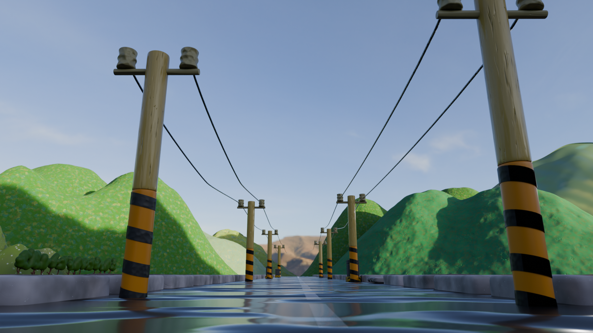
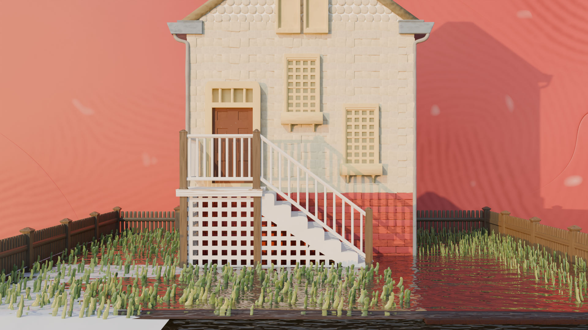
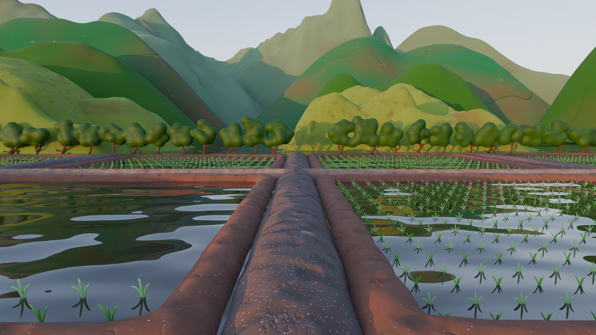
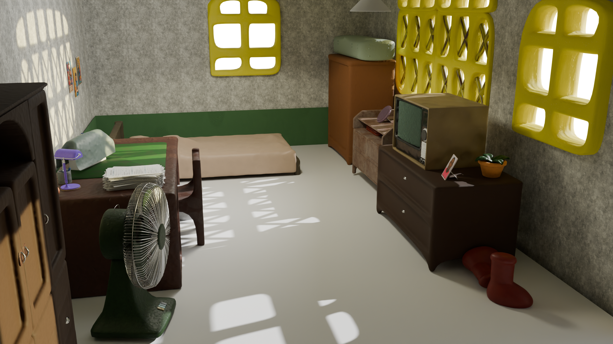
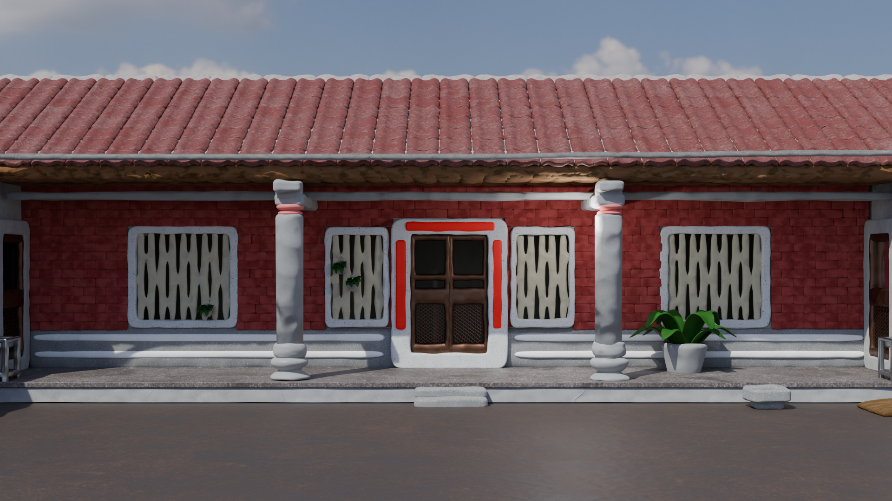
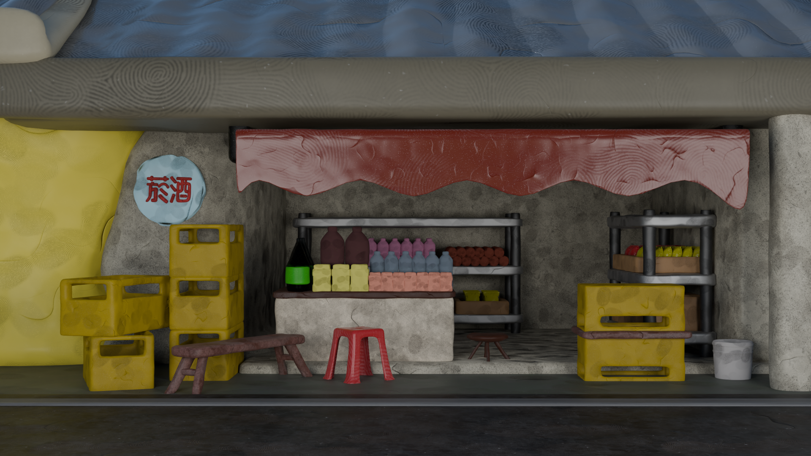

畢業製作主要負責 3D 建模，希望透過本網站展示自己在動畫裡所製作的部分建模場景。
展示我在畢業製作期間完成的 3D 建模作品

田野道路
稻田中間的道路，主要是主角丟報紙給農夫的畫面。

架高房子
在動畫序幕中，報紙的其中一張照片後方的房子，照片只顯示房子下方，但我很喜歡這個房子。

田野
稻田也是動畫中蠻重要的一個景，很多畫面都會用到這個田。

主角家中
主角的家設定是單人，家具也很簡陋，平常也不怎麼整理，亂亂的感覺。

三合院
是我們其中一個配角阿嬤的家，他也會在三合院的中間曬自己的菜乾。

雜貨店
配角雜貨店阿婆的店，旁邊箱子還會有阿婆的貓咪在上面休息。